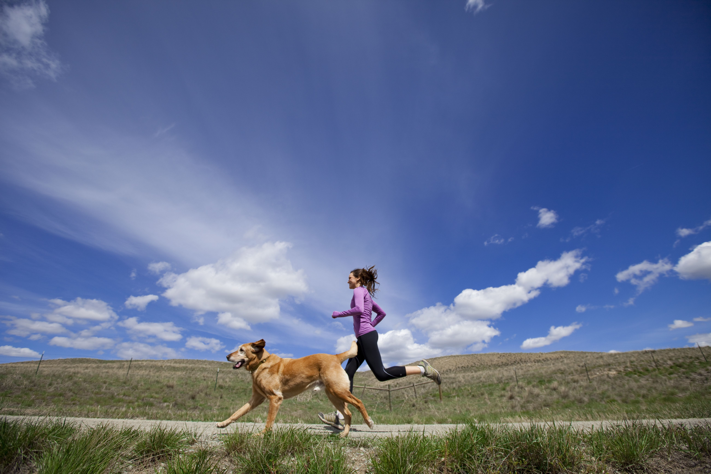
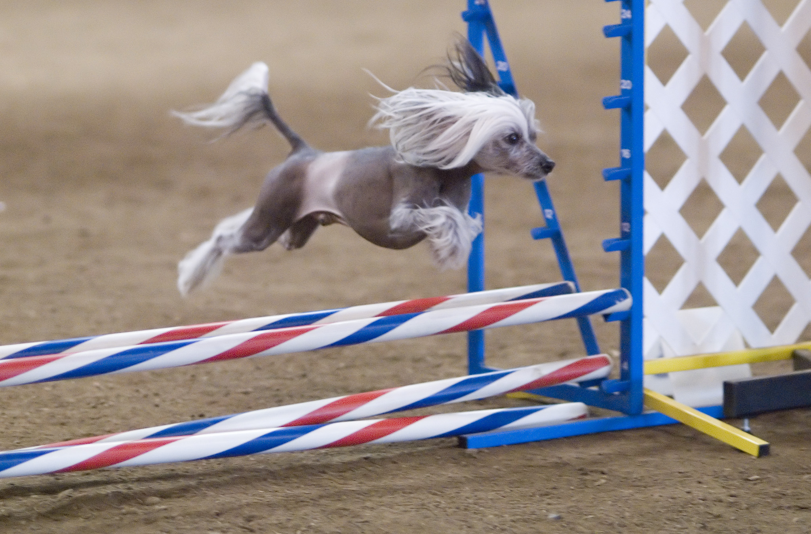

Regular exercise for pets is crucial for their physical and mental well-being. Physically, it helps maintain a healthy weight, reducing the risk of obesity-related conditions like diabetes and arthritis. Exercise also strengthens muscles and improves cardiovascular health, leading to a longer and more active life. Mentally, it provides essential stimulation, reducing the likelihood of behavioral problems such as anxiety, aggression, and destructive habits. Interactive activities like fetch, walks, and playtime enhance the bond between pets and their owners, fostering a deeper emotional connection. Overall, ensuring pets get regular exercise promotes a healthier, happier, and more harmonious life
In addition to physical and mental health benefits, regular exercise for pets can enhance their social skills. Interacting with other animals and people during walks or visits to dog parks can improve a pet's ability to socialize, reducing fear and aggression towards unfamiliar beings. This socialization is crucial for pets to develop well-rounded temperaments. Furthermore, a well-exercised pet is typically more relaxed and content at home, which can lead to fewer disruptions and a more peaceful household environment. Exercise routines can also provide a structured daily schedule, giving pets a sense of security and predictability. Overall, the benefits of regular exercise extend beyond health, contributing to a pet’s overall happiness and integration into family life.
At "Get a Pet," we understand the profound impact regular exercise has on a pet’s overall well-being. Engaging your pet in daily physical activities not only keeps them fit and healthy but also significantly enhances their mood and behavior. Pets that exercise regularly exhibit fewer behavioral issues, making them more enjoyable companions. Additionally, exercise provides opportunities for pets to explore their environment, satisfy their natural curiosity, and alleviate boredom. By prioritizing regular exercise, pet owners can ensure their furry friends lead a balanced, fulfilling life. At "Get a Pet," we encourage all pet owners to make exercise a fundamental part of their pet care routine, promoting healthier and happier pets.
Here are some popular exercises to keep your pet active:
| Image | Exercise | Information |
|---|---|---|
|  | Walking | Walking is a fundamental exercise for pets, particularly dogs. Regular walks help maintain a healthy weight, provide mental stimulation, and allow pets to explore their environment. It’s also a great opportunity for owners and pets to bond. |
| Playing Fetch | Fetch is an excellent way to engage your pet in vigorous physical activity. It enhances their agility and provides a great outlet for their energy. This game is particularly beneficial for dogs with high energy levels. | |
| Climbing | For cats, climbing is a natural and enjoyable exercise. Providing a cat tree or safe outdoor space for climbing can help improve their muscle tone and coordination. Climbing also satisfies their instinctual need to observe their surroundings from a height. | |
|  | Agility Training | Agility training is a structured form of exercise that involves obstacle courses. This activity is perfect for dogs, as it enhances their problem-solving skills, builds confidence, and strengthens the owner-pet bond through teamwork. |